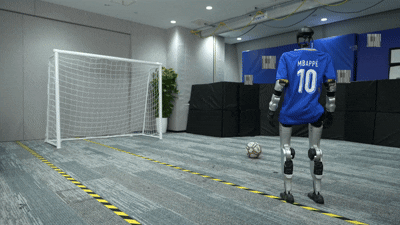
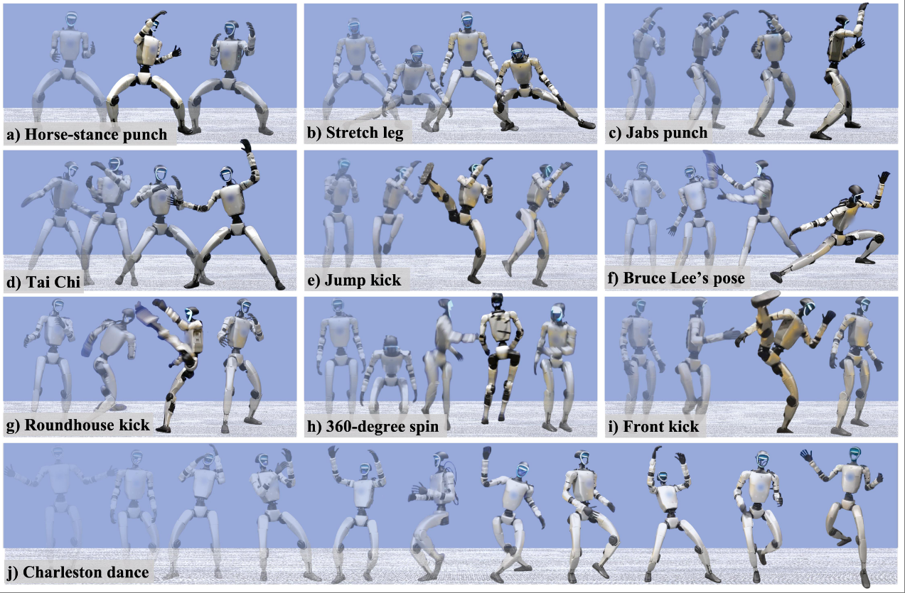

👾
Jinrui Han (韩金睿)
Hi! I am an incoming 26Fall PhD student & last-year master student at Shanghai Jiao Tong University (SJTU). Before that, I earned a Bachelor's degree from SJTU in 2023. Currently I am a research intern at Institute of Artificial Intelligence (TeleAI), China Telecom, co-worked with Dr.Chenjia Bai to advance research in humanoid whole-body control.
I do research in robotics, mainly focusing on applying
Loco-Manipulation: learning to humanoid-object interaction skills
Email: You can contact me via email for any inquiries or collaborations:jrhan82@sjtu.edu.cn or wechat:Bw_Rooney
reinforcement learning to endow robots with human-like behaviors.
Humanoid Locomotion: reinforcement learning, whole-body control, motion imitation
Loco-Manipulation: learning to humanoid-object interaction skills
Email: You can contact me via email for any inquiries or collaborations:jrhan82@sjtu.edu.cn or wechat:Bw_Rooney
📄 projects

HUSKY:
Humanoid Skateboarding System via Physics-Aware Whole-Body Control
In Submission
Jinrui Han*, Dewei Wang*, Chenyun Zhang, Xinzhe Liu, Ping Luo, Chenjia Bai†, Xuelong Li
[PDF] | [CODE] | [DEMO]
Abstract: While current humanoid whole-body control frameworks predominantly rely on the static environment assumptions, addressing tasks characterized by high dynamism and complex interactions presents a formidable challenge. In this paper, we address humanoid skateboarding, a highly challenging task requiring stable dynamic maneuvering on an underactuated wheeled platform. This integrated system is governed by non-holonomic constraints and tightly coupled human-object interactions. Successfully executing this task requires simultaneous mastery of hybrid contact dynamics and robust balance control on a mechanically coupled, dynamically unstable skateboard. To overcome the aforementioned challenges, we propose HUSKY, a learning-based framework that integrates humanoid-skateboard system modeling and physics-aware whole-body control. We first model the coupling relationship between board tilt and truck steering angles, enabling a principled analysis of system dynamics. Building upon this, HUSKY leverages Adversarial Motion Priors (AMP) to learn human-like pushing motions and employs a physics-guided, heading-oriented strategy for lean-to-steer behaviors. Moreover, a trajectory-guided mechanism ensures smooth and stable transitions between pushing and steering. Experimental results on the Unitree G1 humanoid platform demonstrate that our framework enables stable and agile maneuvering on a skateboard in real-world scenarios. ... See More
In Submission
Jinrui Han*, Dewei Wang*, Chenyun Zhang, Xinzhe Liu, Ping Luo, Chenjia Bai†, Xuelong Li
[PDF] | [CODE] | [DEMO]
Abstract: While current humanoid whole-body control frameworks predominantly rely on the static environment assumptions, addressing tasks characterized by high dynamism and complex interactions presents a formidable challenge. In this paper, we address humanoid skateboarding, a highly challenging task requiring stable dynamic maneuvering on an underactuated wheeled platform. This integrated system is governed by non-holonomic constraints and tightly coupled human-object interactions. Successfully executing this task requires simultaneous mastery of hybrid contact dynamics and robust balance control on a mechanically coupled, dynamically unstable skateboard. To overcome the aforementioned challenges, we propose HUSKY, a learning-based framework that integrates humanoid-skateboard system modeling and physics-aware whole-body control. We first model the coupling relationship between board tilt and truck steering angles, enabling a principled analysis of system dynamics. Building upon this, HUSKY leverages Adversarial Motion Priors (AMP) to learn human-like pushing motions and employs a physics-guided, heading-oriented strategy for lean-to-steer behaviors. Moreover, a trajectory-guided mechanism ensures smooth and stable transitions between pushing and steering. Experimental results on the Unitree G1 humanoid platform demonstrate that our framework enables stable and agile maneuvering on a skateboard in real-world scenarios. ... See More

TextOp:
Real-time Interactive Text-Driven Humanoid Robot Motion Generation and Controll
In Submission
Weiji Xie, Jiakun Zheng, Jinrui Han, Jiyuan Shi, Weinan Zhang, Chenjia Bai†, Xuelong Li
[PDF] | [CODE] | [DEMO]
Abstract: Recent advances in humanoid whole-body motion tracking have enabled the execution of diverse and highly coordinated motions on real hardware. However, existing controllers are commonly driven either by predefined motion trajectories, which offer limited flexibility when user intent changes, or by continuous human teleoperation, which requires constant human involvement and limits autonomy. This work addresses the problem of how to drive a universal humanoid controller in a real-time and interactive manner. We present TextOp, a real-time text-driven humanoid motion generation and control framework that supports streaming language commands and on-the-fly instruction modification during execution. extOp adopts a two-level architecture in which a high-level autoregressive motion diffusion model continuously generates short-horizon kinematic trajectories conditioned on the current text input, while a low-level motion tracking policy executes these trajectories on a physical humanoid robot. By bridging interactive motion generation with robust whole-body control, TextOp unlocks free-form intent expression and enables smooth transitions across multiple challenging behaviors such as dancing and jumping, within a single continuous motion execution. Extensive real-robot experiments and offline evaluations demonstrate instant responsiveness, smooth whole-body motion, and precise control. ... See More
In Submission
Weiji Xie, Jiakun Zheng, Jinrui Han, Jiyuan Shi, Weinan Zhang, Chenjia Bai†, Xuelong Li
[PDF] | [CODE] | [DEMO]
Abstract: Recent advances in humanoid whole-body motion tracking have enabled the execution of diverse and highly coordinated motions on real hardware. However, existing controllers are commonly driven either by predefined motion trajectories, which offer limited flexibility when user intent changes, or by continuous human teleoperation, which requires constant human involvement and limits autonomy. This work addresses the problem of how to drive a universal humanoid controller in a real-time and interactive manner. We present TextOp, a real-time text-driven humanoid motion generation and control framework that supports streaming language commands and on-the-fly instruction modification during execution. extOp adopts a two-level architecture in which a high-level autoregressive motion diffusion model continuously generates short-horizon kinematic trajectories conditioned on the current text input, while a low-level motion tracking policy executes these trajectories on a physical humanoid robot. By bridging interactive motion generation with robust whole-body control, TextOp unlocks free-form intent expression and enables smooth transitions across multiple challenging behaviors such as dancing and jumping, within a single continuous motion execution. Extensive real-robot experiments and offline evaluations demonstrate instant responsiveness, smooth whole-body motion, and precise control. ... See More

Learning Soccer Skills for Humanoid Robots A Progressive Perception-Action Framework
In Submission
Jipeng Kong, Xinzhe Liu, Yuhang Lin, Jinrui Han, Sören Schwertfeger, Chenjia Bai†, Xuelong Li
[PDF]
Abstract: Soccer presents a significant challenge for humanoid robots, demanding tightly integrated perception-action capabilities for tasks like perception-guided kicking and whole-body balance control. Existing approaches suffer from inter-module instability in modular pipelines or conflicting training objectives in end-to-end frameworks. We propose Perception-Action integrated Decision-making (PAiD) a progressive architecture that decomposes soccer skill acquisition into three stages motion-skill acquisition via human motion tracking, lightweight perception-action integration for positional generalization, and physics-aware sim-to-real transfer. This staged decomposition establishes stable foundational skills, avoids reward conflicts during perception integration, and minimizes sim-to-real gaps. Experiments on the Unitree G1 demonstrate high-fidelity human-like kicking with robust performance under diverse conditions—including static or rolling balls, various positions, and disturbances—while maintaining consistent execution across indoor and outdoor scenarios. Our divide-and-conquer strategy advances robust humanoid soccer capabilities and offers a scalable framework for complex embodied skill acquisition. ... See More
In Submission
Jipeng Kong, Xinzhe Liu, Yuhang Lin, Jinrui Han, Sören Schwertfeger, Chenjia Bai†, Xuelong Li
[PDF]
Abstract: Soccer presents a significant challenge for humanoid robots, demanding tightly integrated perception-action capabilities for tasks like perception-guided kicking and whole-body balance control. Existing approaches suffer from inter-module instability in modular pipelines or conflicting training objectives in end-to-end frameworks. We propose Perception-Action integrated Decision-making (PAiD) a progressive architecture that decomposes soccer skill acquisition into three stages motion-skill acquisition via human motion tracking, lightweight perception-action integration for positional generalization, and physics-aware sim-to-real transfer. This staged decomposition establishes stable foundational skills, avoids reward conflicts during perception integration, and minimizes sim-to-real gaps. Experiments on the Unitree G1 demonstrate high-fidelity human-like kicking with robust performance under diverse conditions—including static or rolling balls, various positions, and disturbances—while maintaining consistent execution across indoor and outdoor scenarios. Our divide-and-conquer strategy advances robust humanoid soccer capabilities and offers a scalable framework for complex embodied skill acquisition. ... See More

KungfuBot2:
Learning Versatile Motion Skills for Humanoid Whole-Body Control
ICRA 2026 (Vienna, Austria)
Jinrui Han, Weiji Xie, Jiakun Zheng, Jiyuan Shi, Weinan Zhang, Ting Xiao, Chenjia Bai†
[PDF] | [CODE] | [DEMO]
Abstract: Learning versatile whole-body skills by tracking various human motions is a fundamental step toward general-purpose humanoid robots. This task is particularly challenging because a single policy must master a broad repertoire of motion skills while ensuring stability over long-horizon sequences. To this end, we present VMS, a unified whole-body controller that enables humanoid robots to learn diverse and dynamic behaviors within a single policy. Our framework integrates a hybrid tracking objective that balances local motion fidelity with global trajectory consistency, and an Orthogonal Mixture-of-Experts (OMoE) architecture that encourages skill specialization while enhancing generalization across motions. A segment-level tracking reward is further introduced to relax rigid step-wise matching, enhancing robustness when handling global displacements and transient inaccuracies. We validate VMS extensively in both simulation and real-world experiments, demonstrating accurate imitation of dynamic skills, stable performance over minute-long sequences, and strong generalization to unseen motions. These results highlight the potential of VMS as a scalable foundation for versatile humanoid whole-body control ... See More
ICRA 2026 (Vienna, Austria)
Jinrui Han, Weiji Xie, Jiakun Zheng, Jiyuan Shi, Weinan Zhang, Ting Xiao, Chenjia Bai†
[PDF] | [CODE] | [DEMO]
Abstract: Learning versatile whole-body skills by tracking various human motions is a fundamental step toward general-purpose humanoid robots. This task is particularly challenging because a single policy must master a broad repertoire of motion skills while ensuring stability over long-horizon sequences. To this end, we present VMS, a unified whole-body controller that enables humanoid robots to learn diverse and dynamic behaviors within a single policy. Our framework integrates a hybrid tracking objective that balances local motion fidelity with global trajectory consistency, and an Orthogonal Mixture-of-Experts (OMoE) architecture that encourages skill specialization while enhancing generalization across motions. A segment-level tracking reward is further introduced to relax rigid step-wise matching, enhancing robustness when handling global displacements and transient inaccuracies. We validate VMS extensively in both simulation and real-world experiments, demonstrating accurate imitation of dynamic skills, stable performance over minute-long sequences, and strong generalization to unseen motions. These results highlight the potential of VMS as a scalable foundation for versatile humanoid whole-body control ... See More

KungfuBot:
Physics-Based Humanoid Whole-Body Control for Learning Highly-Dynamic Skills
NeurIPS 2025 (San Diego, United States)
Weiji Xie*, Jinrui Han*, Jiakun Zheng*, Huanyu Li, Xinzhe Liu, Jiyuan Shi, Weinan Zhang, Chenjia Bai†, Xuelong Li.
[PDF] | [CODE] | [DEMO] | [TALK]
Abstract: Humanoid robots are promising to acquire various skills by imitating human behaviors. However, existing algorithms are only capable of tracking smooth, low-speed human motions, even with delicate reward and curriculum design. This paper presents a physics-based humanoid control framework, aiming to master highly-dynamic human behaviors such as Kungfu and dancing through multi-steps motion processing and adaptive motion tracking. For motion processing, we design a pipeline to extract, filter out, correct, and retarget motions, while ensuring compliance with physical constraints to the maximum extent. For motion imitation, we formulate a bi-level optimization problem to dynamically adjust the tracking accuracy tolerance based on the current tracking error, creating an adaptive curriculum mechanism. We further construct an asymmetric actor-critic framework for policy training. In experiments, we train whole-body control policies to imitate a set of highly-dynamic motions. Our method achieves significantly lower tracking errors than existing approaches and is successfully deployed on the Unitree G1 robot, demonstrating stable and expressive behaviors. ... See More
NeurIPS 2025 (San Diego, United States)
Weiji Xie*, Jinrui Han*, Jiakun Zheng*, Huanyu Li, Xinzhe Liu, Jiyuan Shi, Weinan Zhang, Chenjia Bai†, Xuelong Li.
[PDF] | [CODE] | [DEMO] | [TALK]
Abstract: Humanoid robots are promising to acquire various skills by imitating human behaviors. However, existing algorithms are only capable of tracking smooth, low-speed human motions, even with delicate reward and curriculum design. This paper presents a physics-based humanoid control framework, aiming to master highly-dynamic human behaviors such as Kungfu and dancing through multi-steps motion processing and adaptive motion tracking. For motion processing, we design a pipeline to extract, filter out, correct, and retarget motions, while ensuring compliance with physical constraints to the maximum extent. For motion imitation, we formulate a bi-level optimization problem to dynamically adjust the tracking accuracy tolerance based on the current tracking error, creating an adaptive curriculum mechanism. We further construct an asymmetric actor-critic framework for policy training. In experiments, we train whole-body control policies to imitate a set of highly-dynamic motions. Our method achieves significantly lower tracking errors than existing approaches and is successfully deployed on the Unitree G1 robot, demonstrating stable and expressive behaviors. ... See More